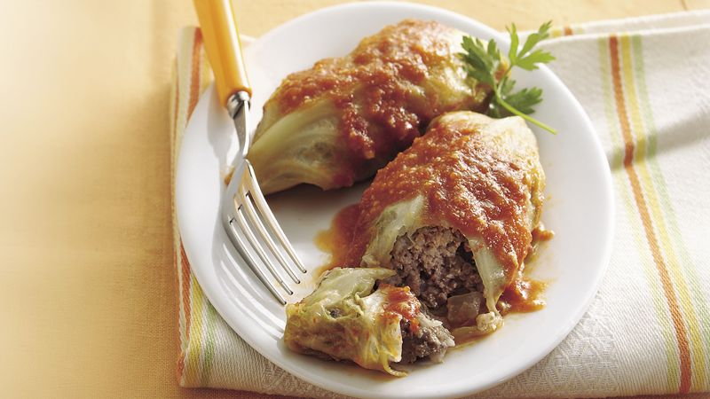

Stuffed Cabbage Rolls
Home

Tender cabbage leaves filled with aromatic rice, herbs, and spices, simmered in a rich tomato sauce. A comforting Egyptian classic that turns humble ingredients into a soulful meal.
Egyptian Stuffed Cabbage Rolls are made by wrapping lightly blanched cabbage leaves around a savory rice filling infused with onions, herbs, and tomato. Once rolled, the bundles are neatly packed in a pot, topped with tomato sauce, and left to simmer gently until the flavors meld beautifully. This dish is warm, fragrant, and deeply satisfying — a staple of Egyptian home cooking that brings families together around the table.
Ingredients:-
- 1 medium cabbage
- 1 ½ cups short-grain rice, rinsed
- 1 large onion, finely chopped
- 2 tablespoons tomato paste
- 2 medium tomatoes, grated or blended
- ½ cup fresh dill and parsley, finely chopped
- ½ teaspoon ground cumin
- ½ teaspoon black pepper
- 1 teaspoon salt (or to taste)
- tablespoons vegetable oil or ghee
- 200 g minced beef or lamb for a meat version
- 3 cups tomato juice or diluted tomato paste for cooking
Steps:-
- Prepare the cabbage: Boil a large pot of water and gently separate the cabbage leaves, blanching each for about 1–2 minutes until pliable. Drain and set aside.
- Make the stuffing: In a bowl, mix rice, onion, herbs, tomato paste, grated tomato, oil, salt, pepper, and cumin. Add minced meat if using.
- Assemble the rolls: Cut thick veins from the center of each cabbage leaf. Place a spoonful of filling on the edge and roll tightly, folding the sides inward.
- Arrange in the pot: Line the bottom with unused cabbage leaves, then layer the rolls neatly. Pour tomato juice over until the rolls are just covered.
- Cook: Bring to a gentle boil, then reduce heat, cover, and simmer for 45–60 minutes until the rice is fully cooked and the sauce is thickened.
- Serve: Let it rest for 10 minutes before serving warm with extra tomato sauce or a squeeze of lemon.